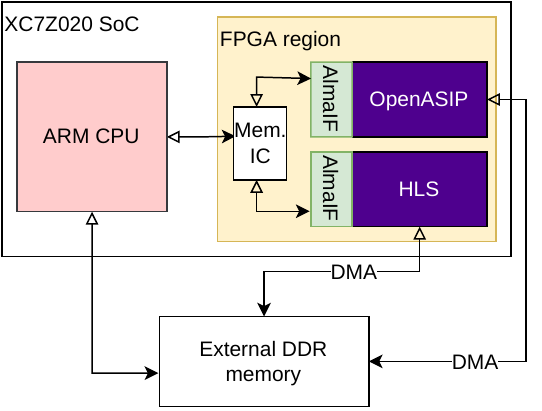

November 15 2022: Advanced hardware accelerator support through AlmaIF
A more advanced version of a driver for specialized hardware devices has been pushed to the master branch. The new driver called almaif implements the functionality previously handled by accel and ttasim drivers. The driver works with both programmable and non-programmable hardware accelerators that implement the almaif interface as described in [1].
The driver can be used with OpenCL Custom Devices (CL_DEVICE_TYPE_CUSTOM) which don't support online compilation, or with CL_DEVICE_TYPE_ACCELERATORs, which support device-specific compilation (implemented only for OpenASIP for now)
Instructions for building and using the AlmaIF driver can be found in the user manual.
AlmaIF
AlmaIF is a memory-mapped interface designed by us for communicating with specialized hardware devices. It is a specification we defined in order to be able to generate different types of hardware devices (programmable ASIPs or fixed-function hardware) while reducing the device-specific code in the PoCL's driver layer. The specification is inspired by HSA's AQL specification, but doesn't completely implement it.
The interface is designed to be flexible enough, so that the underlying hardware accelerator can be implemented in various ways. Currently this has been tested with open-source OpenASIP toolset and AMD's (Xilinx) Vitis HLS toolset. The hardware generation scripts are now included in the open-source PoCL, so it is possible for you to generate the hardware yourself as long as you have the toolsets installed (see instructions).
Hardware devices can exist on various different platform configurations. (e.g. system-on-chip or PCIe accelerator). The PoCL's AlmaIF-driver is built to be easily extendable to new platforms. Practically, this means implementing a C++ class responsible for creating memory-mapped operations to the hardware accelerator's memory. Currently there are support for:
- Memory-mapped accelerators existing in the physical address space of the host CPU (for SoCs)
- Experimental XRT backend (for Xilinx PCIe FPGAs)
- Instruction-set simulator (for OpenASIP's simulator)
- Virtual emulation device (for debugging built-in kernels on host CPU)
The compiler support for other than OpenASIP's programmable devices has not been tested yet. The necessary abstractions are built into the driver as described in [1]. However, it would be interesting to try to integrate another type of compiler-supported programmable accelerator into the driver to enable easy OpenCL-programmability for other hardware projects than our own!
Publications
More information about the principles of this driver can be found from the following two publications:
[1] T. Leppänen, P. Mousouliotis, G. Keramidas, J. Multanen and P. Jääskeläinen, "Unified OpenCL Integration Methodology for FPGA Designs," 2021 IEEE Nordic Circuits and Systems Conference (NorCAS), 2021, pp. 1-7, doi: 10.1109/NorCAS53631.2021.9599861.
[2] T. Leppänen, A. Lotvonen, P. Jääskeläinen, 2022 "Cross-vendor programming abstraction for diverse heterogeneous platforms," Frontiers in Computer Science, vol. 4, doi: 10.3389/fcomp.2022.945652